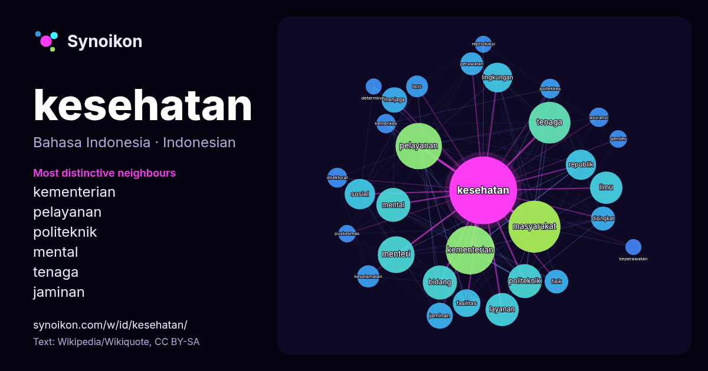

Bahasa Indonesia · kata populer
kesehatan
“health” · Kata-kata di sekitarnya dalam 1602 kemunculan dari Wikipedia, Wikiquote.

Tetangga paling khas
- kementerian 69×
- pelayanan 63×
- politeknik 55×
- mental 49×
- tenaga 42×
- jaminan 33×
- bpjs 27×
- disingkat 26×
- menteri 23×
- poltekkes 23×
- layanan 23×
- kemenkes 22×
- republik 22×
- keselamatan 20×
- perawatan 20×
- masyarakat 19×
- direktorat 19×
- asuransi 19×
- fasilitas 18×
- menjaga 18×
× = berapa kali lebih sering daripada di teks Wikipedia umum.
Tetangga paling sering
- masyarakat 160
- kementerian 141
- pelayanan 127
- indonesia 126
- tenaga 103
- menteri 80
- bidang 69
- mental 68
- politeknik 68
- layanan 65
- ilmu 62
- pendidikan 62
- sosial 55
- republik 54
- lingkungan 52
- organisasi 49
- dunia 46
- fasilitas 45
- program 42
- jaminan 40
Dalam konteks
- atau kelemahan. Pemahaman tentang kesehatan telah bergeser seiring dengan waktu. Berkembangnya teknologi kesehatan berbasis digital telah memungkinkan Wikipedia snippets · Kesehatan
- Utara (Long Island) (en) Departemen Kesehatan New York (en) Jacobson v. Massachusetts (en) Komisioner Kesehatan Kota New York (en) Zillis-Reischen (en) Wikipedia snippets · Halaman Utama
- terlepas dari beberapa masalah kesehatan umum yang sedang meningkat, seperti negara-negara lainnya. Masalah kesehatan yang berhubungan dengan polusi udara Wikipedia snippets · Tiongkok
- mempromosikan kesehatan masyarakat dan pedesaan dengan mengorganisir inisiatif untuk meningkatkan kebersihan, mendorong gaya hidup sehat, dan memberikan Wikipedia snippets · Siti Hasmah Mohamad Ali
- Badan Penyelenggara Jaminan Sosial Kesehatan, disingkat menjadi BPJS Kesehatan merupakan lembaga negara yang bertanggung jawab langsung kepada Presiden Wikipedia snippets · Badan Penyelenggara Jaminan Sosial Kesehatan
- Kementerian Kesehatan Republik Indonesia (disingkat Kemenkes RI) adalah kementerian dalam Pemerintah Indonesia yang membidangi urusan kesehatan. Kementerian Wikipedia snippets · Kementerian Kesehatan Republik Indonesia
- Kesehatan mental atau kesehatan jiwa adalah keadaan individu sejahtera menyadari potensi yang dimilikinya, mampu menanggulangi tekanan hidup normal, bekerja Wikipedia snippets · Kesehatan mental
- Menteri Kesehatan Republik Indonesia adalah kepala Kementerian Kesehatan Republik Indonesia. Menteri Kesehatan bertindak sebagai pembantu Presiden Indonesia Wikipedia snippets · Daftar Menteri Kesehatan Indonesia
Kata lainnya
- air
- anjing
- bahasa
- emas
- iklim
- jantung
- jembatan
- kebenaran
- kehidupan
- kekuasaan
- keluarga
- kematian
- kereta
- kerja
- kesenian
- kucing
- lingkungan
- makanan
- sains
- sejarah
- tuhan
- uang
Dihitung sebelumnya pada 2026-10-09 dengan pengaturan bawaan (±5 kata, korpus sedang). Peta interaktif dapat memperbaruinya dengan data langsung.
Antarmuka diterjemahkan mesin; koreksi dipersilakan.